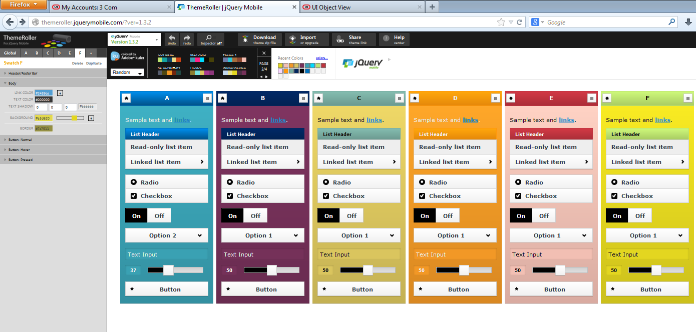

This is a popup!
This is a simple jQuery Mobile page.
✅ What is jQuery Mobile? jQuery Mobile is a UI framework built on top of jQuery, optimized for mobile devices. It provides: Touch-friendly components Responsive layouts Smooth page transitions Easy navigation between pages in a single HTML file
 Go to Page 2